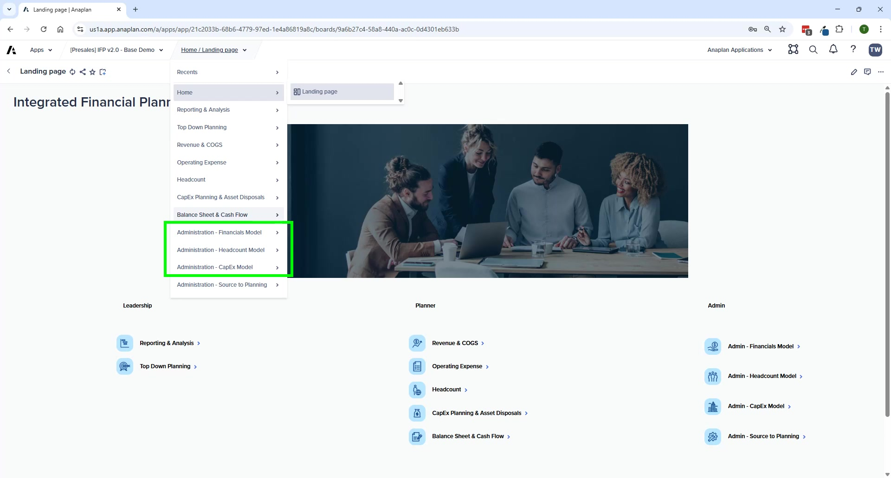

Inter-Module Data Flows
How all 4 models connect and data flows between them
Reference
Data Flow Overview

Module-to-Module Connections
| From | To | What Flows | How |
|---|---|---|---|
| Administration (ADO) | All Spoke Models | Planning hierarchies (Entity, Dept, IS/BS accounts) | ADO push |
| Headcount (HC) | Financial Planning (FP) | Workforce costs by GL account | FIN – Import from HC Model action |
| CapEx (CE) | Financial Planning (FP) | Depreciation expense, PP&E, cash payments | FIN – Import from CapEx Model action |
| Revenue/COGS (FP) | Balance Sheet (FP) | AR (via DSO), COGS → inventory, net income → retained earnings | Internal FP formulas |
| OpEx (FP) | Balance Sheet (FP) | AP (via DPO), accrued expenses → current liabilities | Internal FP formulas |
| All FP modules | Top-Down Summary (FP) | Bottom-up totals for target comparison | Internal FP formulas |
| All FP modules | Reporting & Analysis | Consolidated IS, BS, CF data | Internal FP formulas |
Reporting: Available Reports
| Report | Source Data |
|---|---|
| Income Statement | Revenue/COGS + OpEx + HC (via import) + CapEx depreciation (via import) |
| Balance Sheet | BS account planning + CapEx PP&E + Revenue-driven AR + OpEx-driven AP |
| Cash Flow (Indirect) | BS account changes mapped to CF lines + manual adjustments |
| Variance Analysis (IS/BS) | Any two versions compared |
| Currency Variance Analysis | FX rate changes between periods |
| Product Outlier Analysis | Revenue/COGS data by product |
| Management Reporting Pack | Consolidated IS + BS + CF + dynamic commentary |
Administration as the Data Hub
- Source systems → Admin model (via ADO)
- Admin model → mapping workbench (source → planning)
- Admin model → all spoke models (via ADO push)
🚨 Always Complete Admin Mappings First
Every planning model (FP, HC, CE) depends on Admin model for its list structures. Always complete Admin mappings before loading actuals or starting a new planning cycle.